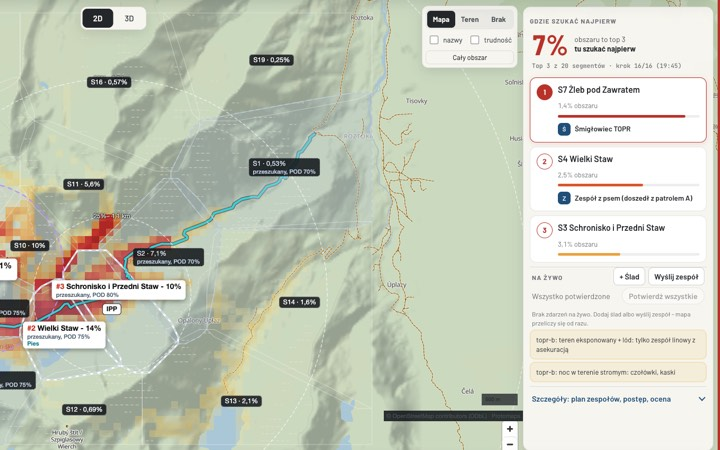
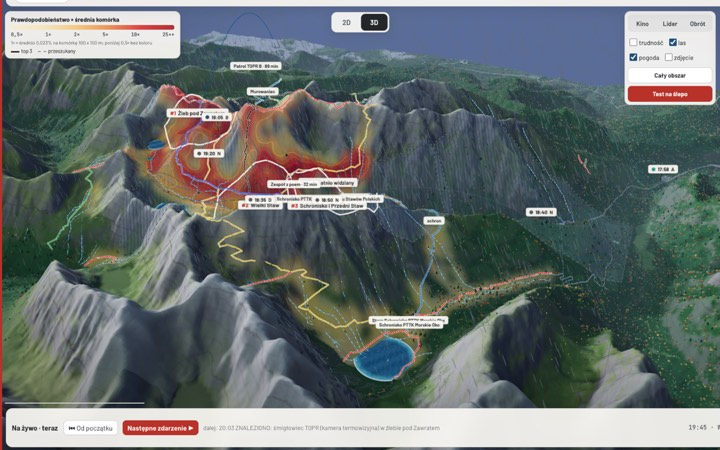
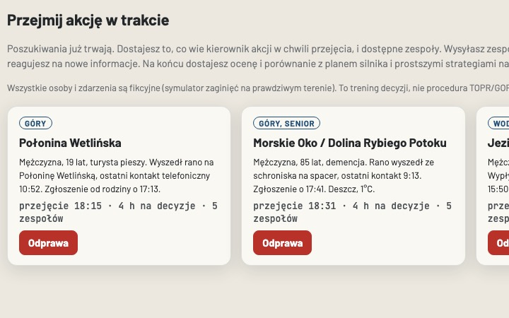
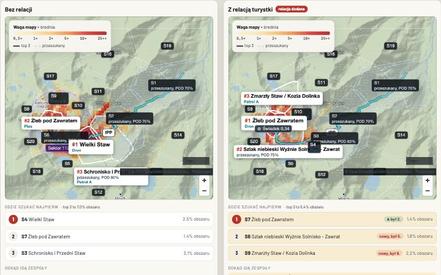
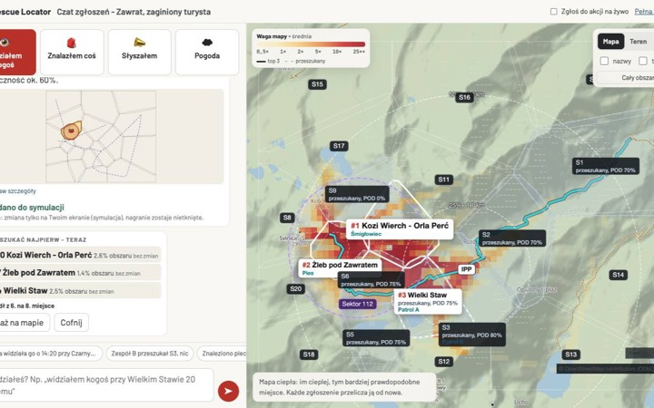

Rescue Locator
Gdzie szukać najpierw.
Rescue Locator to narzędzie dla kierownika akcji GOPR, TOPR i WOPR: z kilku niepewnych wskazówek robi jedną mapę i mówi, które sektory przeszukać najpierw. Każda nowa wskazówka, także „przeszukane, nic”, przelicza mapę i plan zespołów w kilka sekund.
Where to search first: a search-planning tool that turns uncertain clues into one map and a search order for mountain and water rescue leaders.
Pokaż w 90 sekund
Przewodnik po jednej akcji: Zawrat, sobota 17:40, mgła i zmrok.
Dla ratowników
Kierownik akcji, ratownicy w terenie i centrum: wspólna mapa, kolejność sektorów i przydziały zespołów.
Kierownik akcji
Laptop: mapa wskazówek, kolejność sektorów, plan zespołów, meldunki z terenu.
Ratownik (telefon)
Jeden ekran: moje zadanie, kierunek i odległość, meldunek zwykłym zdaniem.
Centrum
Wszystkie akcje na jednej mapie i rezerwa zespołów po regionach.
Odprawa (druk) Jedna strona A4 dla kierownika akcji i karty zadań dla zespołów
Dla rodzin i turystów
Ktoś bliski nie wrócił z gór, lasu albo znad wody? Co zrobić najpierw i jak pomóc ratownikom.
Co tu zobaczysz

Mapa i kolejność sektorów Kierownik akcji widzi, które trzy sektory przeszukać najpierw i ile to obszaru.
Teren w 3D Ta sama akcja na prawdziwym terenie: żleby, las, stoki i trasy zespołów.
Ćwiczenia Przejmij trwającą akcję, wyślij zespoły i porównaj swój plan z planem silnika.
Co zmienia jedna relacja Ta sama akcja na Zawracie policzona dwa razy: bez relacji i z relacją turystki, która minęła zaginionego na szlaku. Inna kolejność sektorów, inne zespoły w drodze.
Czat meldunków (dla ratowników) Kierownik akcji wpisuje zwykłym zdaniem relację świadka albo meldunek zespołu. Czat pokaże, jak to zrozumiał, zaznaczy miejsce na mapie i od razu przeliczy, gdzie szukać najpierw.Jak to działa
- Zgłoszenie Kto zaginął, gdzie i kiedy był ostatnio widziany.
- Sygnały i teren Telefon, auto na parkingu, świadek, pogoda, przeszukane sektory - na prawdziwym terenie i statystyce zaginięć.
- Gdzie szukać najpierw Trzy sektory z największą wagą mapy. To kolejność przeszukiwania, nie szansa znalezienia. Każdy meldunek, także „pusto”, ją przelicza.